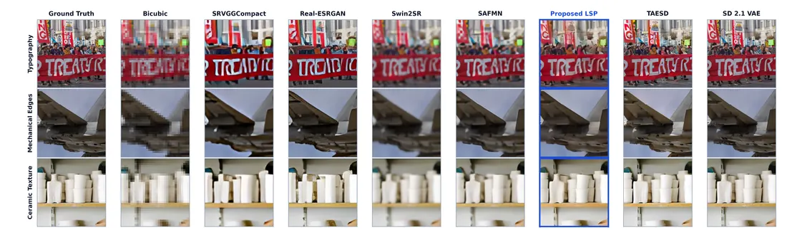
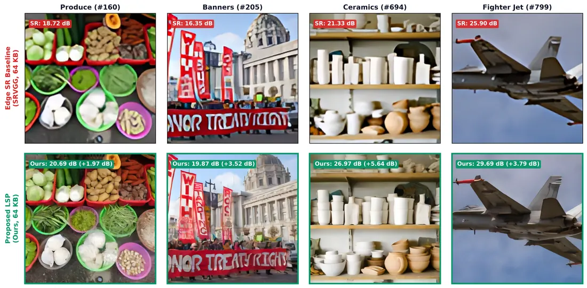
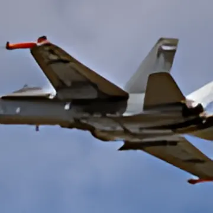
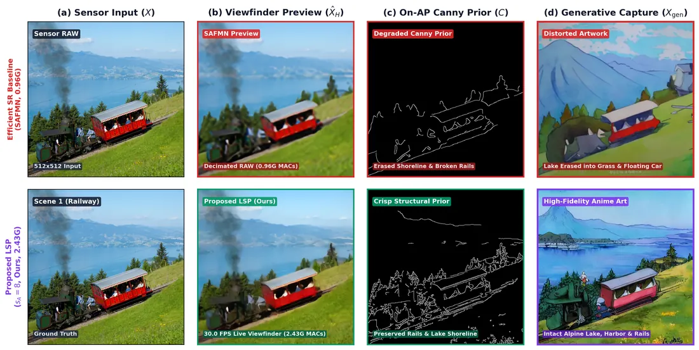
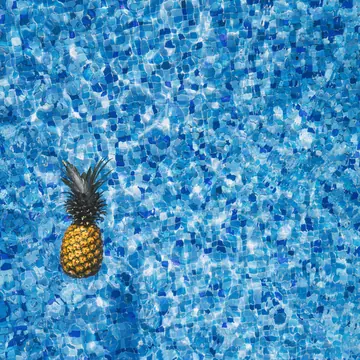
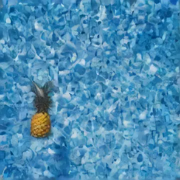
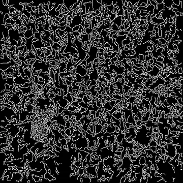
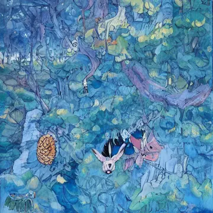

Latent Signal Processing — 센서–호스트 비대칭 분할 인코더
전통적인 카메라는 센서에서 픽셀을 완성해 호스트로 보낸 뒤, 호스트에서 다시 무거운 신경망 인코더로 잠재 표현(Latent)을 추출합니다.
Latent Signal Processing (LSP)은 이 중복을 제거합니다. 인코더를 센서–SoC 경계에서 비대칭으로 분해하여,
센서 다이 NPU(Stage A)가 버스 대역폭을 최대 48× 압축하고, 호스트 NPU(Stage B)가 이를 표준 Stable Diffusion VAE 잠재 공간(kl-f8, \(\alpha=0.18215\))으로 복원함으로써
30 FPS 실시간 뷰파인더와 Zero-Shutter-Lag (ZSL) 생성형 캡처를 단일 파이프라인으로 통합합니다.
2.1 왜 인코더를 나누는가 — 버스 병목과 Regime 전환
엣지 카메라에서 신경망 ISP나 생성형 모델을 구동할 때 가장 먼저 마주치는 벽은 연산기(TOPS)가 아니라 칩 간 직렬 인터페이스와 호스트 DMA 추출 지연입니다.
비압축 IDENTITY 기준선(\(s_A=1\))은 프레임당 3,072 KB를 전송하는 반면, 센서 내부 공간 압축을 적용한 SA8(\(s_A=8\))은 페이로드를 64 KB로 정확히 48× 축소합니다.
Bandwidth-Limited 영역 (\(s_A = 1, 2\))
IDENTITY(3,072 KB)와 SA2(1,024 KB)에서는 호스트가 메타데이터 텐서를 꺼내는 시간(bus_ms = 52.91 ms, 17.63 ms)이
전체 파이프라인에서 가장 긴 단계가 됩니다. 호스트에 26 TOPS급 Hailo-8 가속기를 달아도 프레임 속도는 14.9 ~ 15.2 FPS에 묶입니다.
Compute-Balanced 영역 (\(s_A = 4, 8\))
SA4(256 KB, 6.23 ms)와 SA8(64 KB, 2.90 ms)으로 압축하면 bus_ms가 호스트 디코더(taesd_hailo_ms = 16.44 ms)보다 짧아집니다.
병목이 버스가 아닌 NPU 연산으로 이동하며, SA8은 파이프라인 처리량 43.7 FPS로 카메라 물리 상한(30.0 FPS)을 포화시킵니다.
실측 데이터 정본: rpi_table1_bench_results.json
공간 축소율 \(s_A \in \{1, 2, 4, 8\}\)과 실행 모드(직렬 실행 vs 3단 파이프라인 중첩 실행)를 바꾸어 보세요. 왼쪽 캔버스는 연속된 4개 프레임이 센서 캡처 → MIPI 버스 → Stage B → TAESD 디코더를 통과하는 실시간 타이밍 차트를 그리며, 오른쪽 차트는 DIV2K 100장 검증 세트에서 측정된 대역폭(KB) 대 PSNR(dB) 파레토 프론티어를 보여줍니다.
2.2 센서–호스트 비대칭 분할 아키텍처와 데이터 흐름
아래 아키텍처 다이어그램은 Sony IMX500 센서 다이, MIPI CSI-2 버스, Raspberry Pi 5 + Hailo-8 호스트, 그리고 Workstation GPU까지 이어지는 전체 텐서 경로를 나타냅니다. 각 블록을 클릭하면 해당 모듈의 입출력 텐서 규격, 제약 조건, 그리고 실제 저장소 코드 링크가 아래 인스펙터에 표시됩니다.
다이어그램의 블록을 클릭하면 동작, 핵심 수치, 소스 위치가 여기에 표시됩니다.
2.3 Stage A 압축기와 Stage B 번역기 — 수식 · QAT 명세
LSP 인코더는 입력 영상 \(x \in \mathbb{R}^{512\times 512\times 3}\)을 센서 측 압축기 \(\mathcal{E}_A\)와 호스트 측 번역기 \(\mathcal{T}_B\)의 합성 함수로 근사합니다. 교사(Teacher) 신호는 사전 학습된 Stable Diffusion VAE 인코더(\(\alpha = 0.18215\))의 잠재 텐서 \(z\)입니다:
z.detach() 및 torch.no_grad() 블록 내부에서 실행되므로 역전파 기울기는 순수하게 잠재 공간 L1 손실만으로 계산됩니다.| 모드 | \(r\) 텐서 크기 | 페이로드 | 대역폭 축소 | Stage A 층 구성 (.rpk) | A Params | A MACs | Stage B 구성 (.hef) | B Params | B MACs |
|---|---|---|---|---|---|---|---|---|---|
| SA8 | 64×64×4 | 64 KB | 48× | 3→16→16→4 (k4 s2 ×3) | 5,924 | 0.122 G | 64ch · 8 ResBlock · ↓1 | 595,524 | 2.43 G |
| SA4 | 128×128×4 | 256 KB | 12× | 3→16→4 (k4 s2 ×2) | 1,812 | 0.067 G | 64ch · 8 ResBlock · ↓2 | 1.25 M | 12.4 G |
| SA2 | 256×256×4 | 1024 KB | 3× | 3→4 (k4 s2 ×1) | 196 | 0.013 G | 64ch · 8 ResBlock · ↓4 | 1.91 M | 52.2 G |
파라미터 및 MACs는 encoder.py와 enc_sa8_c4_div2k.yaml 설정으로 계산하고 추출된 가중치(stageA_sa8_c4_weights.npz)로 교차 검증한 정본 수치입니다(SA8 Stage A의 순수 PyTorch Conv2d 가중치·바이어스는 5,924개이며, Keras/ONNX 내보내기 그래프 기준 총 파라미터 표기는 9.59K입니다). \(s_A\)가 작아질수록 Stage B가 처리해야 할 입력 해상도(\(256^2\) 또는 \(128^2\))가 커져 호스트 MACs가 급증합니다.
Hailo-8 호환 Power-of-2 양자화 인식 학습 (QAT)
Hailo-8 NPU의 하드웨어 데이터패스는 곱셈기 오버헤드를 줄이기 위해 레이어 간 스케일 팩터를 2의 거듭제곱(Power-of-2, 비트 시프트)으로 제한합니다. 일반적인 부동소수점 학습 후 사후 양자화(PTQ)를 적용하면 활성값의 최대치(\(\max|x|\))가 조금만 튀어도 스케일 \(s\)가 다음 2의 거듭제곱으로 두 배 점프하여 유효 양자화 비트가 1비트씩 손실됩니다. 이를 방지하기 위해 Stage B(encoder.py:19)는 순전파에서 2의 거듭제곱 스케일 양자화를 모사하고 역전파에서 Straight-Through Estimator (STE)로 기울기를 통과시킵니다:
활성값 분포의 표준편차(\(\sigma\))와 이상치(Outlier) 스파이크 크기를 조절해 보세요. 최대 절대값 \(\max|x|\)가 \(127\cdot 2^k\) 경계를 살짝 넘는 순간, Power-of-2 스케일 \(s\)가 계단식으로 2배 점프하면서 히스토그램 격자 간격이 넓어지고 양자화 신호대잡음비(SQNR)가 급락하는 현상과, QAT가 왜 이상치를 억제하도록 가중치를 유도하는지 직접 확인할 수 있습니다.
2.4 하드웨어 실측 분석 (Raspberry Pi 5 + IMX500 + Hailo-8)
아래 표와 누적 지연 막대 차트는 물리 테스트벤치에서 4가지 파티션 모드를 연속 구동하여 기록한 정본 벤치마크(rpi_table1_bench_results.json)입니다.
| 모드 | payload KB | cap ms | bus ms | Stage B ms | TAESD ms | serial ms | 이론 pipelined FPS | 측정 간격 ms | 측정 FPS |
|---|---|---|---|---|---|---|---|---|---|
| IDENTITY | 3072 | 4.30 | 52.91 | — | — | 57.21 | 18.9 | 67.11 | 14.9 |
| SA2 | 1024 | 0.61 | 17.63 | 15.20 | 16.44 | 49.88 | 20.0 | 65.79 | 15.2 |
| SA4 | 256 | 1.75 | 4.41 | 3.72 | 16.44 | 26.32 | 38.0 | 35.09 | 28.5 |
| SA8 | 64 | 2.59 | 2.90 | 0.97 | 16.44 | 22.90 | 43.7 | 33.33 | 30.0 |
- cap ms —
picamera2.capture_request()완료 대기 시간입니다. 센서 NPU 단독 연산 시간이 아니라 프레임 동기화 대기가 포함됩니다. - bus ms —
imx500.get_outputs()로 메타데이터 텐서를 호스트 메모리로 복사·역직렬화하는 시간입니다. - Stage B ms — SA2·SA4·SA8 모두 Hailo-8
.hef하드웨어 실행 시간입니다(미연결 시 ONNX CPU fallback). - 이론 pipelined FPS = \(1000 / \max(t_{\text{cap}}, t_{\text{bus}}, t_{\text{B}} + t_{\text{TAESD}})\). 측정 FPS는 실제 프레임 도착 간격 역수이며 카메라 노출 주기(30.0 FPS)를 상한으로 합니다.
- 정본 JSON 최종 갱신:
2026-09-07(commit9c2ca3e, 최초 측정2026-09-05 78f68da). - 문서에 병기된
[Stage B 1.29 ms / TAESD 18.28 ms / serial 25.06 ms / 35.8 FPS @ VGA]는 초기640×480측정값이며,512×512정본은 0.97 ms / 16.44 ms / 22.90 ms / 43.7 FPS입니다 (v2_demo.py). - 벤치마크 스크립트는
LSP_DIR절대경로를 사용하며, 실제 하드웨어가 연결되지 않은 환경에서는 정본 JSON을 덮어쓰지 않고.mock.json에 기록합니다.
2.5 화질 평가 (DIV2K Validation 100장) & Universal Latent Hub
Stage B가 출력한 \(\hat{z} \in \mathbb{R}^{64\times 64\times 4}\)는 표준 Stable Diffusion VAE 잠재 매니폴드 위에 놓입니다.
따라서 동일한 \(\hat{z}\) 텐서를 엣지에서는 초경량 TAESD_ft 디코더(16.44 ms)로 디코딩해 뷰파인더에 띄우고,
워크스테이션에서는 무거운 SD VAE Decoder로 디코딩하거나 확산 모델의 초기 잠재 텐서로 즉시 투입할 수 있습니다.
| 설정 | bus KB | PSNR (SD VAE dec) dB | PSNR (TAESD_ft) dB | SSIM | LPIPS ↓ | latent L1 |
|---|---|---|---|---|---|---|
| SD VAE 인코더 (상한) | 3072 | 25.12 | — | 0.794 | 0.076 | — |
| SA2 | 1024 | 23.14 | 24.24 | 0.741 | 0.160 | 0.183 |
| SA4 | 256 | 23.34 | 23.99 | 0.733 | 0.213 | 0.240 |
| SA8 | 64 | 22.90 | 23.24 | 0.698 | 0.293 | 0.292 |
출처: div2k_val_100_eval.json (평가 스크립트: eval_div2k_val.py). “SD VAE 인코더 (상한)”은 원본 512×512 RGB를 호스트 SD VAE로 직접 인코딩·디코딩한 이론 상한입니다. SA8은 대역폭을 48× 줄이면서도 SD VAE 상한 대비 약 0.6 dB 이내의 PSNR과 0.145의 낮은 LPIPS를 유지합니다. IMX500 컴파일러 메모리 리포트(model_quantized_MemoryReport.json)를 함께 참조하세요 — 내부 SRAM 예산 제약과 리포트 수치를 교차 확인할 수 있습니다.


TAESD 및 SD 2.1 VAE 상한에 근접한 선명도를 유지합니다. (하) 4개 대표 장면에서 64 KB Edge SR 기준선 대비 +1.97 ~ +5.64 dB PSNR 향상.
검증 세트의 대표 장면을 전환해 보세요. 동일한 64 KB 버스 텐서 \(r\)로부터 번역된 단일 잠재 텐서 \(\hat{z}\)가
엣지 실시간 프리뷰 디코더(TAESD_ft, 16.44 ms)와 고충실도 교차 디코더(SD VAE)에서 각각 어떻게 복원되는지, 그리고 동일 대역폭의 픽셀 데시메이션+SR 기준선과 얼마나 큰 구조적 차이를 보이는지 직접 비교할 수 있습니다.

2.6 Zero-Shutter-Lag (ZSL) 생성형 캡처와 ControlNet 조건부 확산
일반적인 카메라에서 고화질 생성형 촬영을 수행하려면 셔터를 누른 뒤 ① 센서 재노출, ② 수 MB의 RAW 재전송, ③ 호스트 VAE 인코더 재실행이 필요합니다. LSP의 Zero-Shutter-Lag (ZSL) 캡처는 뷰파인더 스트리밍 중 매 프레임 이미 호스트 메모리에 상주해 있는 \(\hat{z}\)와 프리뷰 이미지를 그대로 스냅샷으로 고정합니다.
ZSL 6단계 실행 시퀀스 (generative_capture_service.py)
- 엣지 스냅샷: 사용자가 캡처를 누르면 현재 프레임의
03_hailo_stageb_latent_z.npy(\(\hat{z}\))와04_hailo_taesd_preview.png를 디스크에 즉시 기록 (재노출·재전송 0). - 비동기 감시: 워크스테이션의
generative_capture_service.py --watch데몬이 새 캡처 폴더를 감지하고scp로 가져옴. - 초기 영상 복원: \(\hat{z} / 0.18215\)를
pipe.vae.decode()로 복원하여 img2img 파이프라인의 초기 영상으로 설정. - 구조 조건 추출: 프리뷰 영상에서
cv2.Canny(gray, 70, 160)윤곽선 맵을 추출해 ControlNet 조건 영상으로 입력. - 고속 확산 생성:
stable-diffusion-v1-5+sd-controlnet-canny, DPM-Solver++ 4 steps (strength 0.70, guidance 7.5). - 4-Panel 갤러리 합성: 원본·프리뷰·Canny·생성 결과를 합성하여 저장하고 RPi 웹 UI로 역전송.
개념적으로 \(\hat{z}\)는 확산 모델의 잠재 공간과 호환되지만, 실제 구현(generative_capture_service.py)은 Diffusers의 표준 StableDiffusionControlNetImg2ImgPipeline을 사용하므로
\(\hat{z}\)를 한 번 VAE 디코더로 디코딩해 이미지를 만든 뒤 파이프라인 내부에서 다시 인코딩합니다.
따라서 “센서 재노출 0 · MIPI 재전송 0 · 엣지 인코더 재실행 0”은 정확히 성립하며, 워크스테이션 측에서는 1회 디코딩/재인코딩이 수행됩니다.

실제 데모의 4-Panel 뷰어(① 센서 입력 · ② TAESD 프리뷰 · ③ Canny 윤곽선 prior · ④ ControlNet 4-step 생성 결과)를 장면별로 전환하고,
Canny 임계값(기본 70 / 160), ControlNet 강도, 확산 스텝 수를 조절하여 윤곽선 밀도와 디테일 복원 품질의 관계를 확인해 보세요.




2.7 엔드투엔드 코드 지도
LSP 트랙의 학습부터 양자화, 컴파일, 엣지 배포, 회귀 테스트까지 모든 단계의 정본 스크립트 위치입니다.
| 단계 | 저장소 파일 | 핵심 역할 |
|---|---|---|
| 모델 정의 | encoder.py · asym_ae.py | EncoderStageA, EncoderStageB, _hailo_fq, AsymAE 조립 |
| 학습 루프 | train_asym_ae.py · enc_sa8_c4_div2k.yaml | Accelerate 기반 지식 증류 학습 루프 및 \(s_A\)별 하이퍼파라미터 YAML |
| 화질·파레토 평가 | eval_div2k_val.py · eval_sa_grid.py | DIV2K 100장 PSNR/SSIM/LPIPS 평가 및 \(s_A \in \{2,4,8\}\) 그리드 스윕 |
| 가중치·캘리브레이션 | export_stagea_weights.py · export_decoder_onnx.py · generate_hailo_calib.py | Stage A .npz 추출, 디코더 ONNX 변환, Hailo PTQ/QAT 캘리브레이션 세트 생성 |
| 하드웨어 컴파일 | compile_all_imx500.py · compile_all_stgb_hef.py · compile_taesd_hef.py | IMX500 .rpk 패키징 및 Hailo-8 .hef 바이너리 컴파일 |
| 엣지 런타임·벤치 | v2_demo.py · run_hardware_benchmark.py | 포트 5000 실시간 웹 뷰파인더 데모 및 Table 1 물리 지연 측정기 |
| 생성형 캡처 데몬 | generative_capture_service.py | 워크스테이션 SSH/SCP 감시 및 SD 1.5 + ControlNet Canny 4-step 생성 |
| 회귀 테스트 | test_pipeline_workflows.py | 7대 연구·컴파일·배포 워크플로 무결성 자동 검증 스위트 |
핵심 정리 · Chapter 02
- 버스 병목 해소와 Regime 전환:
SA8(\(64\times 64\times 4\) FP32, 64 KB)은 MIPI 메타데이터 추출 시간을 52.91 ms에서 2.90 ms로 18.2× 단축하여 시스템 병목을 버스에서 NPU 연산으로 이동시키고 30.0 FPS 카메라 상한을 달성합니다. - 극단적 비대칭 분할: IMX500 센서 NPU에는 SRAM과 연산자 제약에 맞춘 5,924 파라미터(그래프 표기 9.59K) 순수 스트라이드 합성곱(Stage A)만 올리고, 비선형 잠재 공간 정렬은 Hailo-8 호스트 NPU의 595,524 파라미터 ResNet 번역기(Stage B)가 전담합니다.
- Power-of-2 QAT: Hailo 하드웨어의 비트 시프트 스케일(\(s = 2^{\lceil\log_2(\max|x|/127)\rceil}\))을 학습 중 STE로 모사하여 양자화 시 스케일 점프로 인한 정밀도 손실을 방지합니다.
- Universal Latent Hub & ZSL 캡처: Stage B 출력이 표준 SD 1.5 / SD 2.1 공유
kl-f8VAE 잠재 공간(\(\alpha=0.18215\))과 정렬되어 있어, 엣지 실시간 프리뷰(TAESD_ft)와 워크스테이션 생성형 캡처(SD 1.5 + ControlNet Canny)가 추가 센서 노출이나 재전송 없이 동일한 잠재 텐서를 공유합니다.